Software Design
This document describes the high-level software design of the PMCOL Teaching Tool, focusing on the system architecture, core domain entities, and key interaction scenarios. The system follows a layered architecture with a React-based web frontend, a Next.js backend providing API routes and real-time WebSocket communication, and external services for authentication, speech-to-text transcription, and AI-driven prompt generation. Persistent data storage and real-time synchronization are handled through Supabase. The included diagrams illustrate how instructors and students interact with the system, how lessons and discussions are managed securely and anonymously, and how data flows through the system to support real-time classroom engagement.
Architecture Diagram
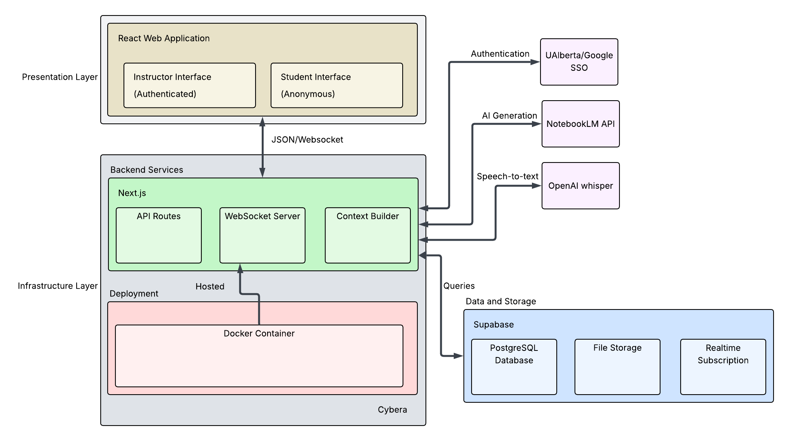
UML Class Diagram
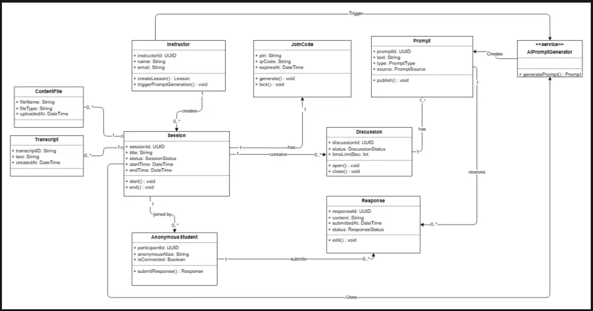
Sequence Diagrams
Discussion Lifecycle + Response Rules + Moderation + Analytics
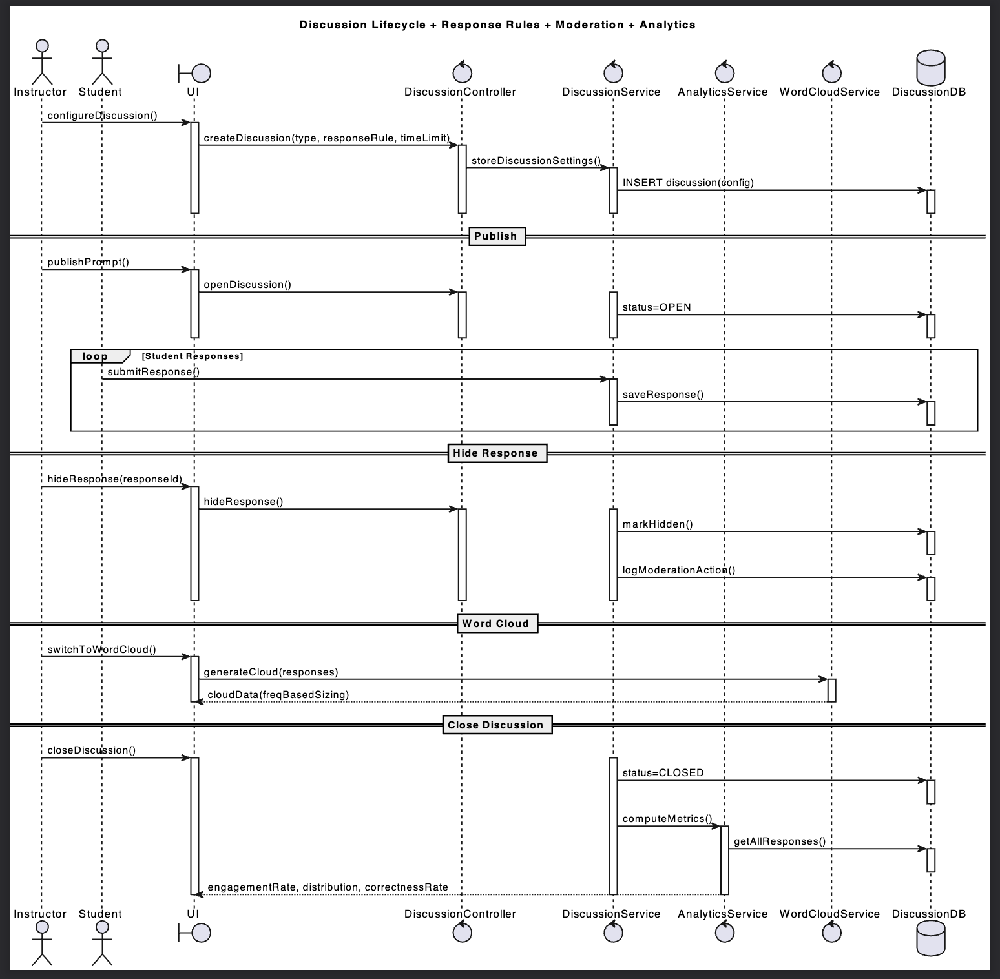
Edit AI Prompt + View Original + Revert
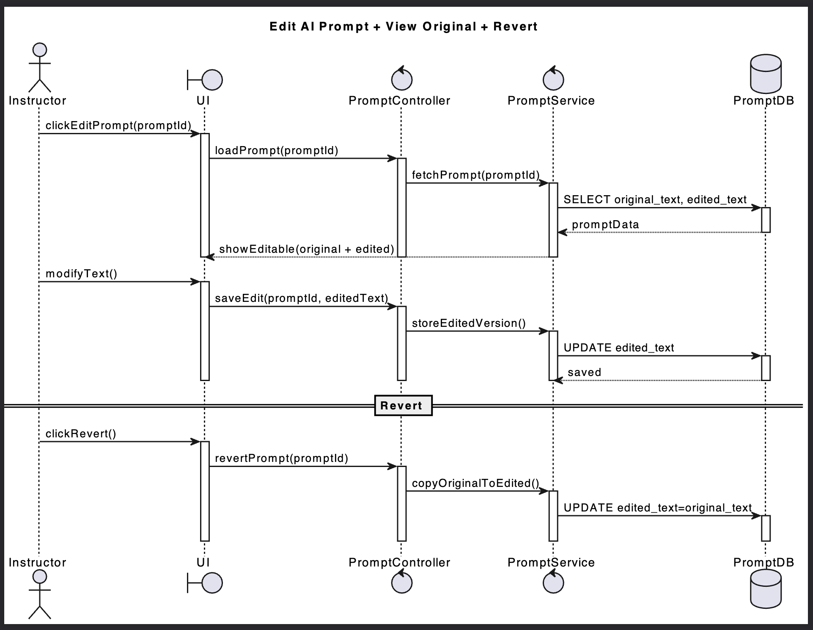
Instructor Dashboard + Lesson Privacy Enforcement
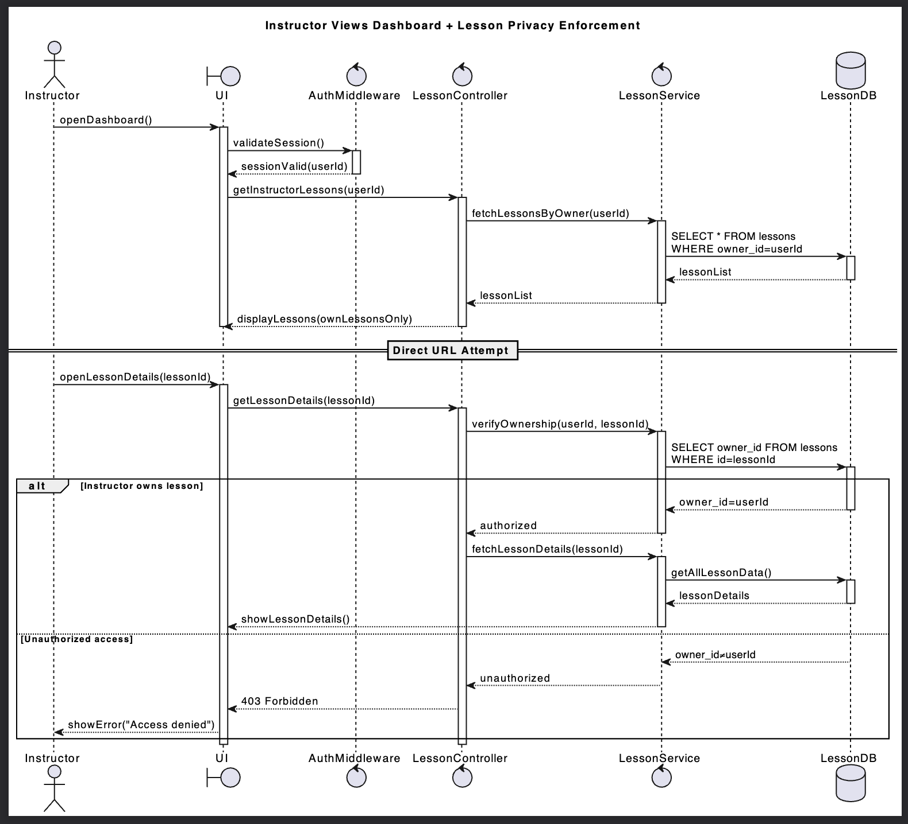
Resume Unfinished Lesson with Full Data Restore
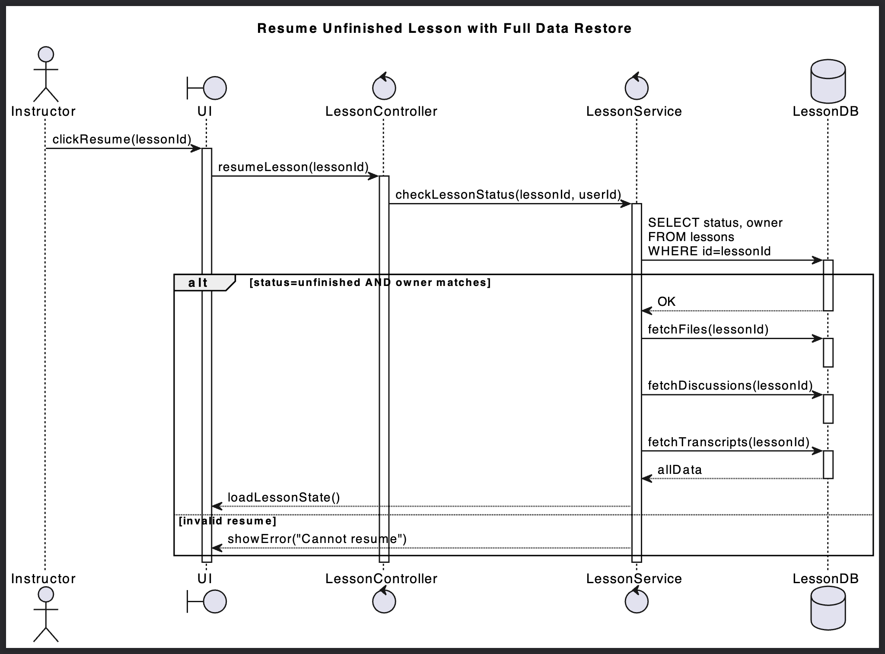
Student Join + Errors + Submission Confirmation
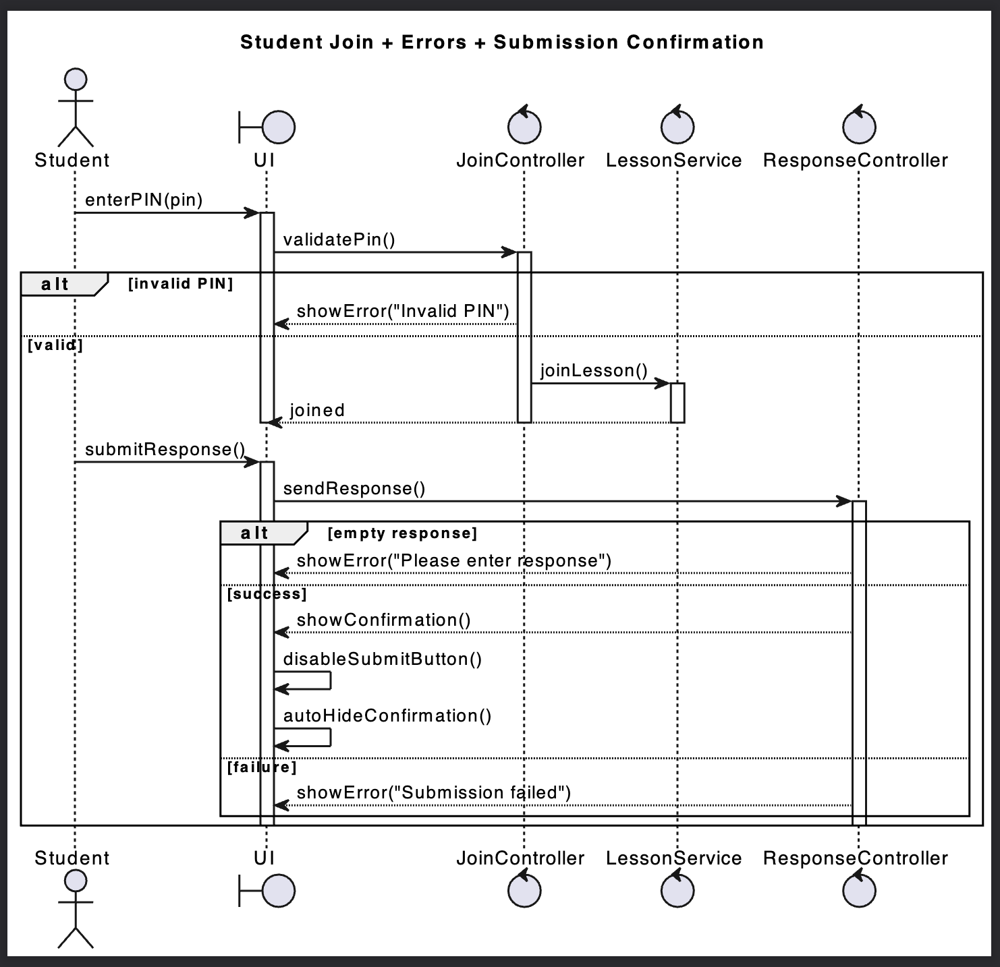
Student MCQ Feedback + Rejoin + Lesson End
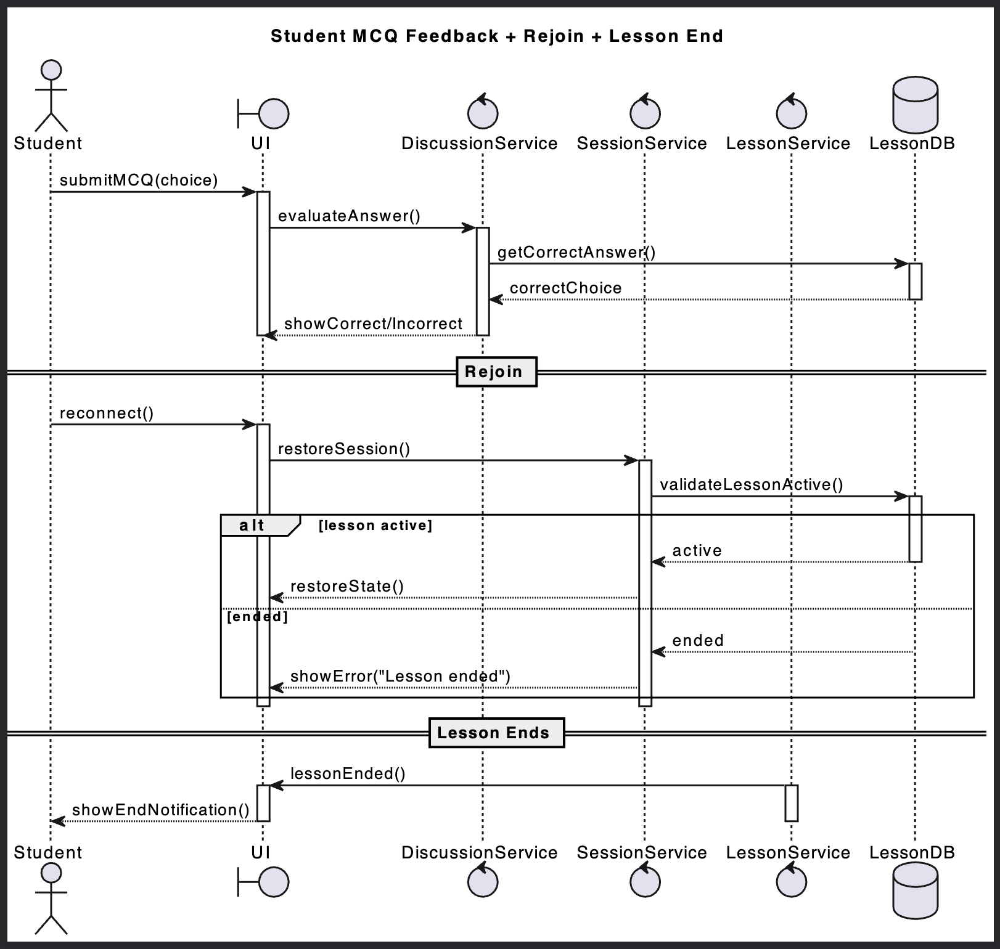
Low-Fidelity User Interface
The low-fidelity user interface designs were created in Figma to explore and validate the core user flows for both instructors and students before implementation.
These wireframes focus on layout, navigation, and system states rather than final visual styling.
🔗 Figma Project (Source of Truth):
https://www.figma.com/design/M9Mnx9FE4gNmGEowfhd6gc/401_PMCOL?node-id=0-1&t=u6qQ3GQjGSBYiAz9-1
Instructor Flow (Figures 1–5)
Figure 1
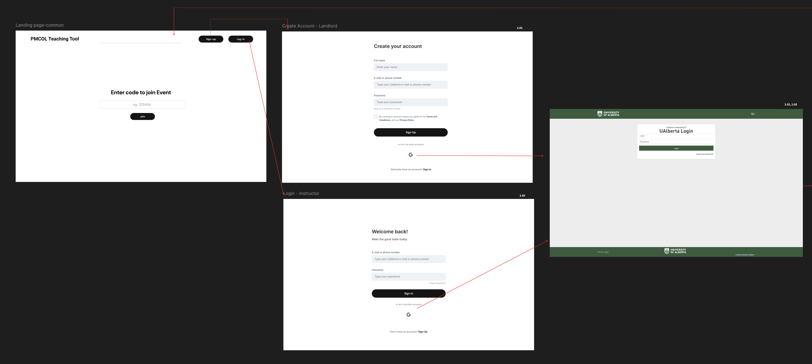
Figure 2
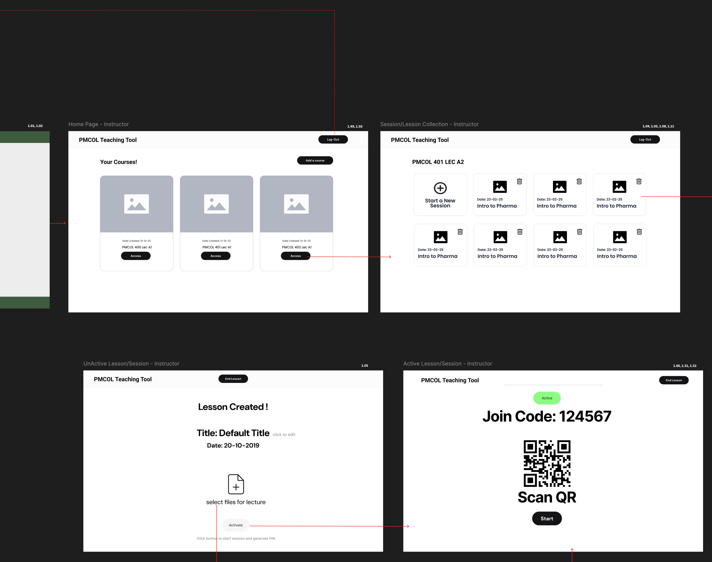
Figure 3
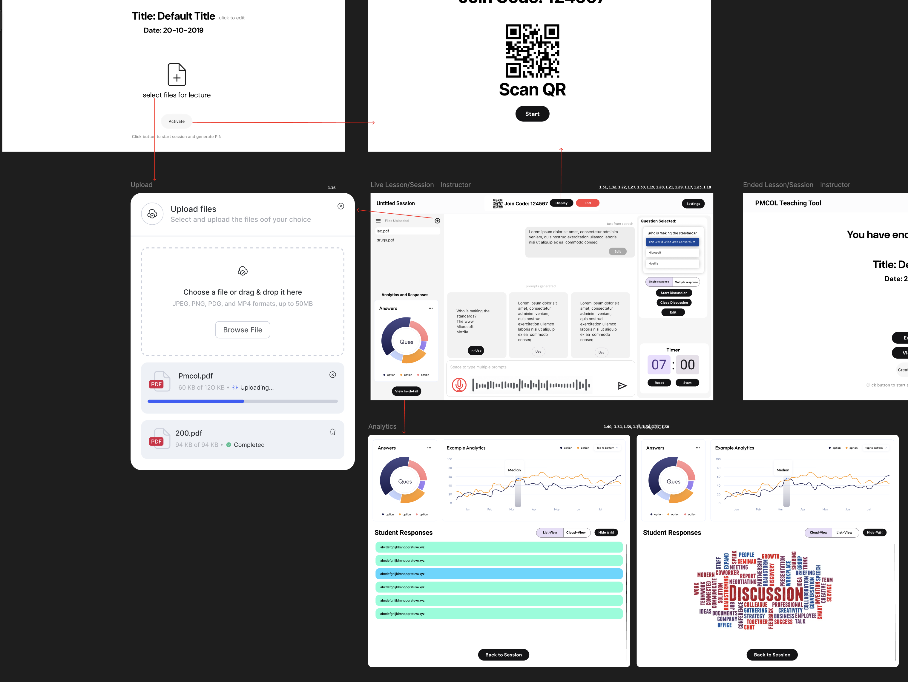
Figure 4
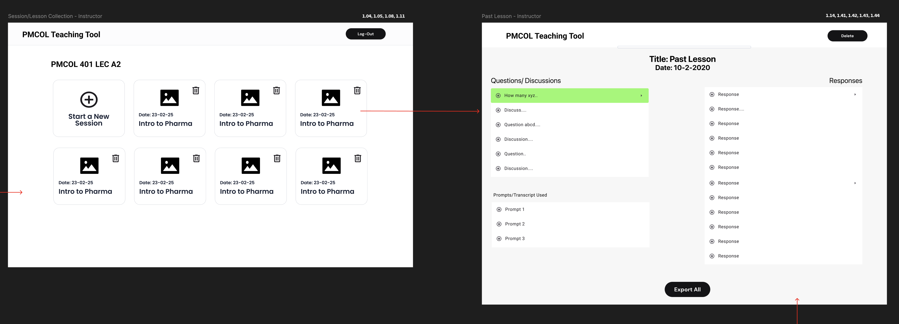
Figure 5
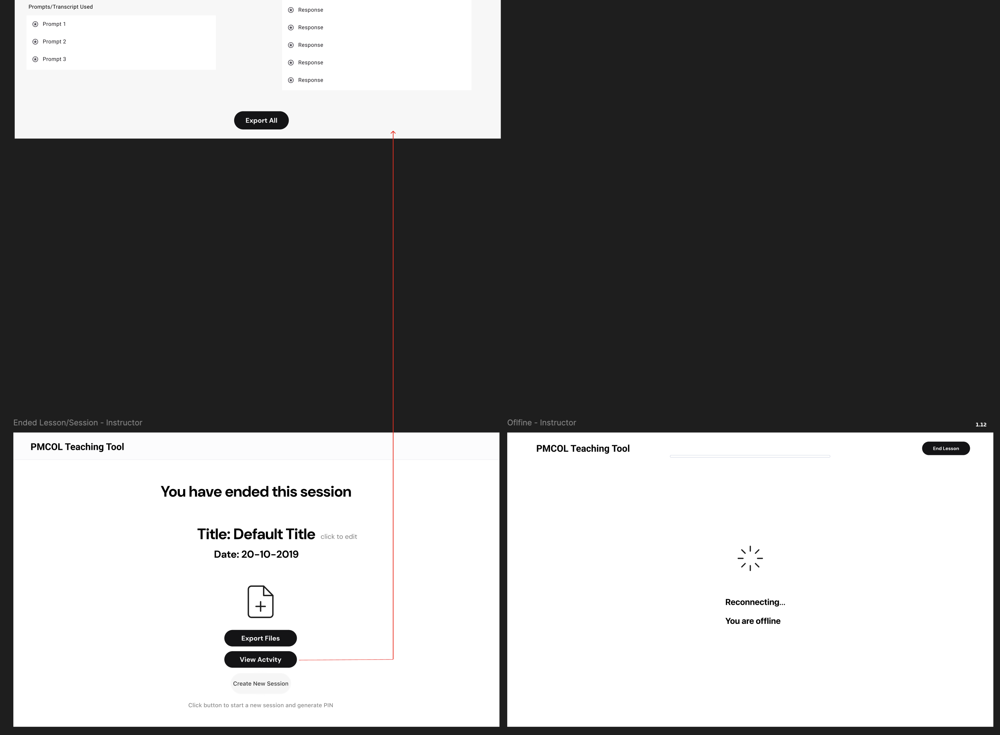
Student Flow (Figure 6)
Figure 6
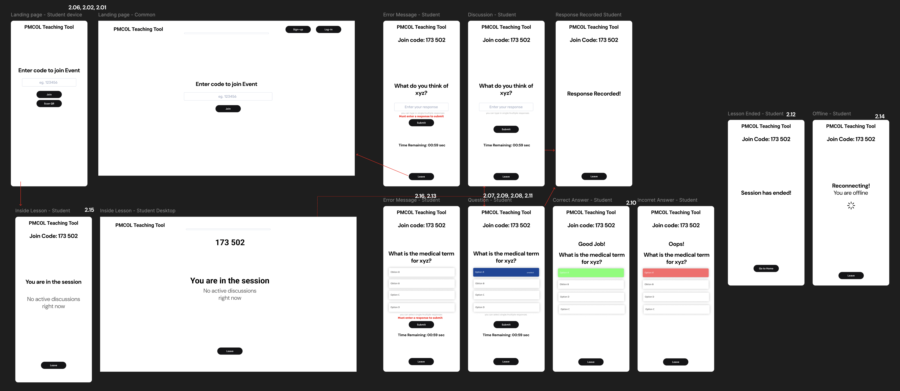
These low-fidelity wireframes directly informed the system architecture, user stories, and UML sequence diagrams by validating expected user behavior and system states prior to implementation.